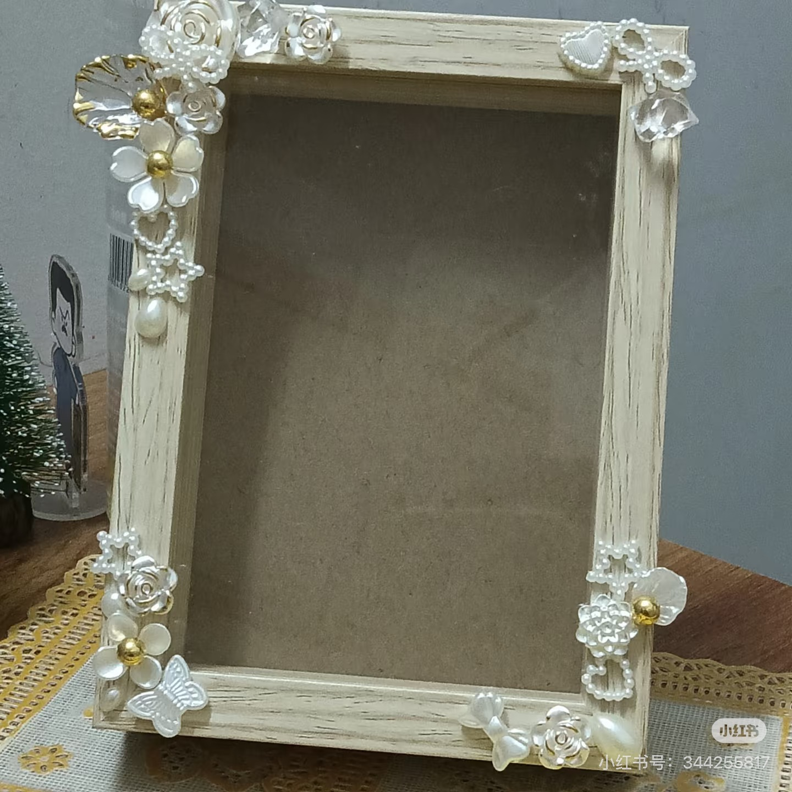
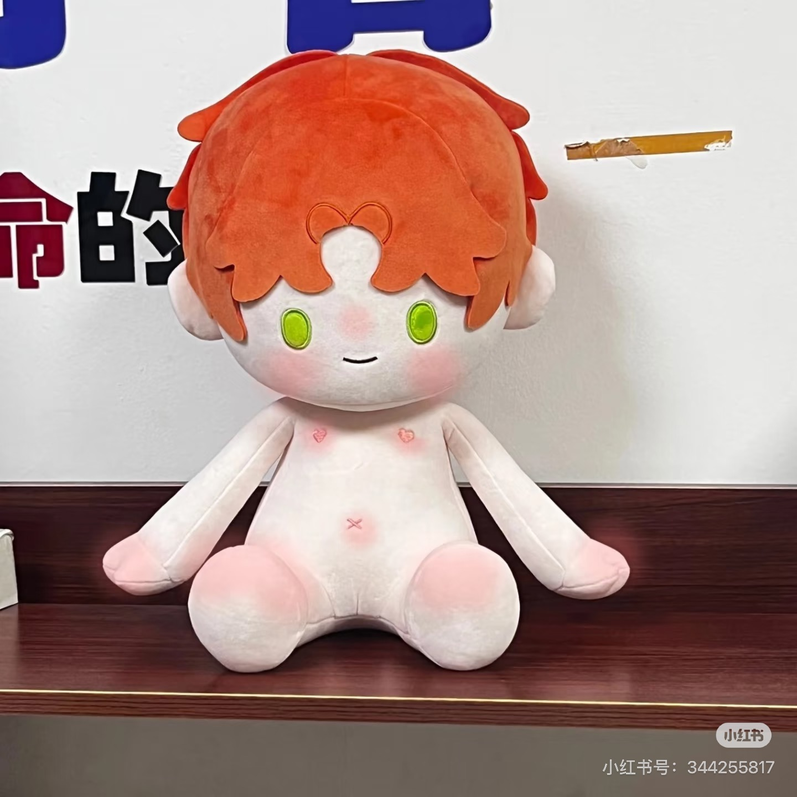

我的第一只布娃娃诞生记
从画草图、选布料、裁剪到一针一线地缝制，每一步都需要耐心与细心。当最后填充好棉花、缝上眼睛的那一刻……
风雨里做一个大人，阳光下做个孩子
嗨~ 我是璐璐，一名热爱手工的女大学生。
在这里，我用针线缝制温暖，用木头雕刻时光。
每一件手工作品，都承载着我对生活的热爱与期待。
用双手创造美好，让每一件作品都有温度
精选柔软面料，一针一线手工缝制。每只布娃娃都是独一无二的小精灵，带着温暖与治愈的力量。
精选优质木材，手工打磨、拼接、上色。每个相框都凝聚着匠心，为美好瞬间找到最温暖的归宿。
从灵感的闪现到成品的诞生，每一步都充满创造的喜悦。用心设计，让手作更有灵魂。
接受个性化定制需求，无论是布娃娃还是相框，都可以按你的想法来打造专属的手工作品。
每一只都承载着温暖与陪伴

柔软绒布手工缝制，40cm大号布娃娃，手感细腻，是陪伴的最佳选择。

精致兔子造型布娃娃，长耳朵、粉嫩脸颊，充满梦幻童话气息。

可爱猫咪造型，手工绣制面部表情，每一只都拥有独特的性格与灵魂。
纯手工打造，为每一帧美好定格

采用天然实木，手工打磨边角，保留木材原始纹理，田园风格温馨自然。

手工做旧工艺，赋予相框岁月感，适合摆放怀旧照片与艺术画作。

简洁线条设计，搭配精细木工工艺，现代风格百搭各种家居装饰。
一个热爱手工、热爱生活的女大学生

一名在校女大学生，手工爱好者。从最初的兴趣到如今的热爱，手工已经成为我生活中不可或缺的一部分。
我喜欢用柔软的布料缝制可爱的布娃娃——它们有着ee们属性和夏鸣星属性，每只都是40cm的温暖陪伴。我也沉醉于木质相框的制作，感受木材在手中的温度与质感。
我的座右铭是：风雨里做一个大人，阳光下做个孩子。希望我的手工作品，能为你带来一丝温暖与快乐。
了解更多 →记录手工与生活的点点滴滴
从画草图、选布料、裁剪到一针一线地缝制，每一步都需要耐心与细心。当最后填充好棉花、缝上眼睛的那一刻……
刚开始接触木工的时候，连锯木头都手抖。经过不断地练习与学习，现在终于可以做出让自己满意的相框了……
在快节奏的大学生活中，手工成了我放松心情、沉淀自我的方式。每一次手作都是一次与内心的对话……